Where We Worked · 2001 to 2021
Afghanistan
Eighteen years in northern Afghanistan, from emergency food and new schools to farm research, two-wheel tractors and clean water, followed by the 2021 evacuation of JDA's Afghan colleagues.
Research plots, Pul-i-Khumri, May 2005
JDA opened its office in Mazar-i-Sharif after the fall of the Taliban in 2001, drawing on its staff and offices across the border in Uzbekistan. From Mazar-i-Sharif, JDA served Balkh, Samangan, Sar-e Pul, Jawzjan and Faryab provinces, and later Baghlan. It ran a research farm and worked from the Development Center just outside the city.
Relief and food for work, 2001 to 2003
Working from Termez in Uzbekistan as a partner of the UN World Food Programme, JDA delivered about 5,000 metric tons of food to more than 20,000 families, followed by a second distribution in fall 2002 to more than 6,000 of the most vulnerable families. Twelve container loads of clothing, shoes and bedding were distributed as well.
In 2003, with Food for the Hungry International as managing partner, JDA ran a food-for-work program in Balkh and Jawzjan provinces. More than 16,000 families received food in exchange for rebuilding their own infrastructure. JDA's 2003 report lists 476 kilometers of roads and 398 kilometers of irrigation canals rebuilt, 187 shallow community wells dug, and 4.3 million bricks made for school renovation.
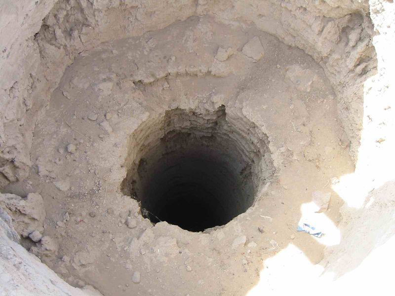
Schools and homes
When JDA arrived, village elders asked for schools, especially for girls. Communities made the bricks themselves, more than three million of them over the summer months of 2003 by JDA's count at the time, and JDA helped them build and repair schools.
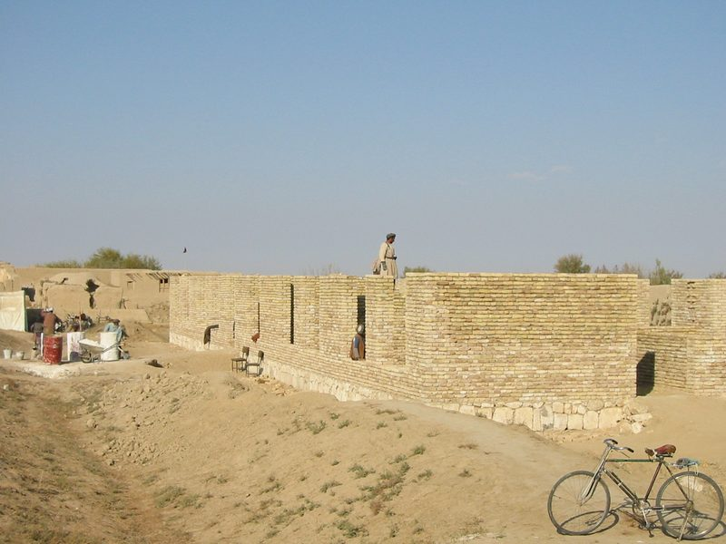
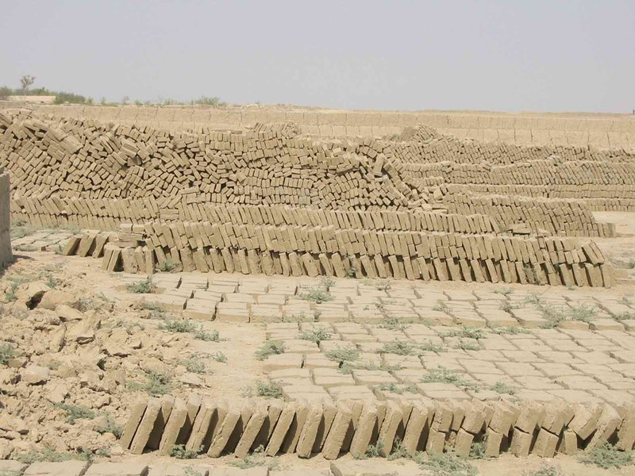
The Sultan Ibrahim School
Construction of the Sultan Ibrahim School began in December 2003, about an hour and a half north and west of Mazar-i-Sharif. It was built by the men of ten surrounding villages, with JDA staff handling materials, logistics and construction, and was dedicated on June 16, 2004. The 13-room building, furnished for $86,000, was designed to take a second floor, which was completed in August 2006. The school was planned for 2,000 boys and girls, taught in three sessions a day.
"It was a humbling experience. As I walked through the line of children, I had tears in my eyes. I was so thankful to be able to play a part in building a school for them, and fulfilling the dreams of the many men and women that asked us to help build schools for the future leaders of their country. They want their children to replace weapons with a pencil and a book."
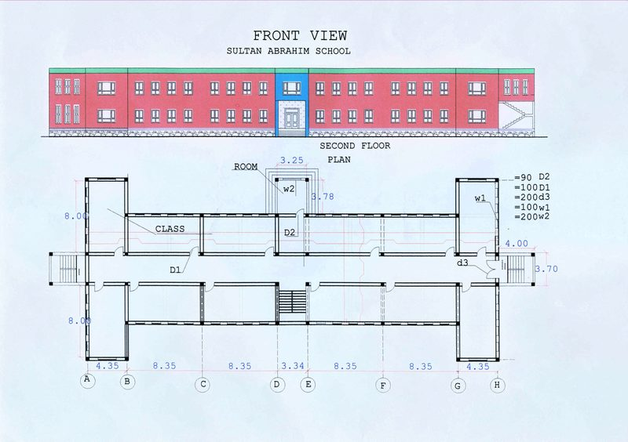
Homes with Habitat for Humanity
With Habitat for Humanity, JDA helped more than 200 families in the remote village of Salbarun, Balkh province, build or rebuild their homes. Each had two rooms and an entry corridor, designed so that women could keep weaving full-length carpets.
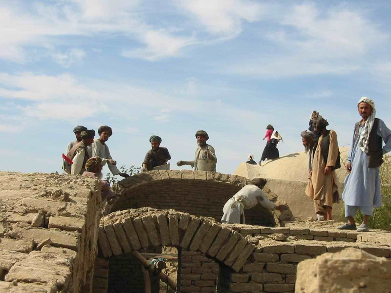
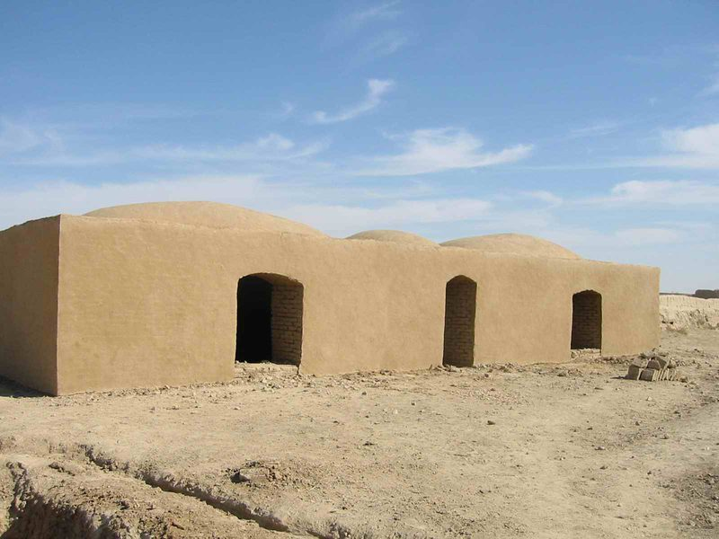
Agriculture research and training
Agriculture was the center of JDA's work in Afghanistan. At its research farm and the Development Center outside Mazar-i-Sharif, and in farmers' own fields, JDA tested crops and methods suited to the north: soybeans, strawberries, rice, winter greenhouses, drip irrigation and lay-flat pipe, cover crops and conservation agriculture, and control of weeds and the melon fly.
JDA's company profile describes a one-hectare research farm. The Development Center, 2 hectares in Balkh, was bought by OHT, JDA's sister company, and JDA used its facilities, including a training building, solar power and demonstration wells, for training, agricultural research and demonstrations. Through RALF, a UK-funded fund for research on alternatives to opium poppy, JDA was the lead agency for a project on more productive and profitable wheat-based cropping systems in Balkh, Baghlan, Kunduz and Badakhshan, from December 2004 to July 2008.
Selected agriculture projects
From JDA's list of selected agriculture projects:
- 2004 to 2008: RALF, wheat-based cropping systems to reduce reliance on opium poppy, Balkh, Baghlan, Kunduz and Badakhshan;
- 2005 and 2006: two USAID projects to help Balkh University's Faculty of Agriculture teach students applied research;
- 2007: melon fly research and training in Balkh and Jawzjan, under USAID's ASAP program;
- 2007 and 2008: joint work with IFDC on vegetables and oilseeds in Balkh;
- 2008: melon fly training for farmers and input dealers in Balkh, Jawzjan and Sar-e Pul, for IFDC;
- 2008: vegetable garden startup, training and monitoring in Jawzjan, with Tearfund UK;
- 2008 and 2009: the Advancing Afghan Agriculture Alliance (A4) with Purdue University, at Balkh University;
- 2009 and 2010: a subcontract under AWATT, led by New Mexico State University, to improve farmers' livelihoods through technology transfer;
- 2009: melon fly control in northern provinces, plus farmer training in agronomy and small-scale mechanization, under USAID's IDEA-NEW program;
- 2014 to 2019: the wheat value chain under RADP-North (see below).
Melon fly
Northern Afghanistan grows more melons than any other part of the country, and by the mid-2000s the melon fly had become a serious pest. JDA began melon fly research in 2007 with FAO and the Ministry of Agriculture, Irrigation and Livestock. A May 2008 JDA press release reported that farmers who used the recommended insecticide and field sanitation raised their profits by 71 to 112 percent from 2006 to 2007. In the 2008 season, JDA and the ministry's Plant Protection and Quarantine Department trained 859 farmers in Balkh, Jawzjan and Sar-e Pul, and Tearfund staff trained by JDA reached 150 more farmers in Jawzjan. JDA's demonstration plots generally got better control than neighboring fields, using a less toxic insecticide and fewer sprays.
JDA's strawberry work began in 2005. In the 2009 to 2010 and 2010 to 2011 seasons, more than 90,000 strawberry plants went to over 120 growers, either directly from JDA projects or from growers who had started with JDA plants.
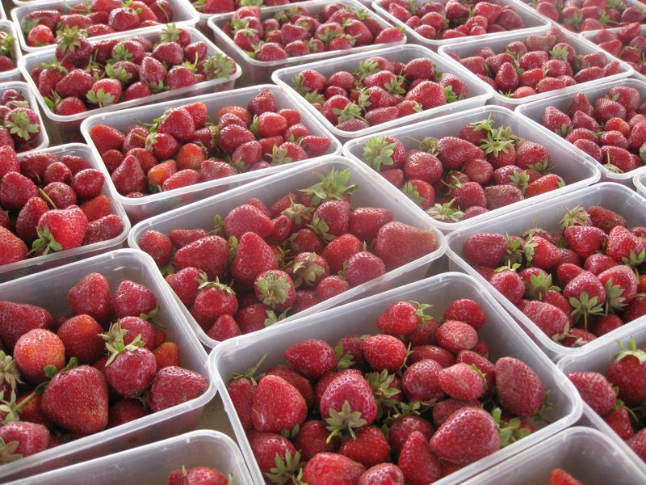
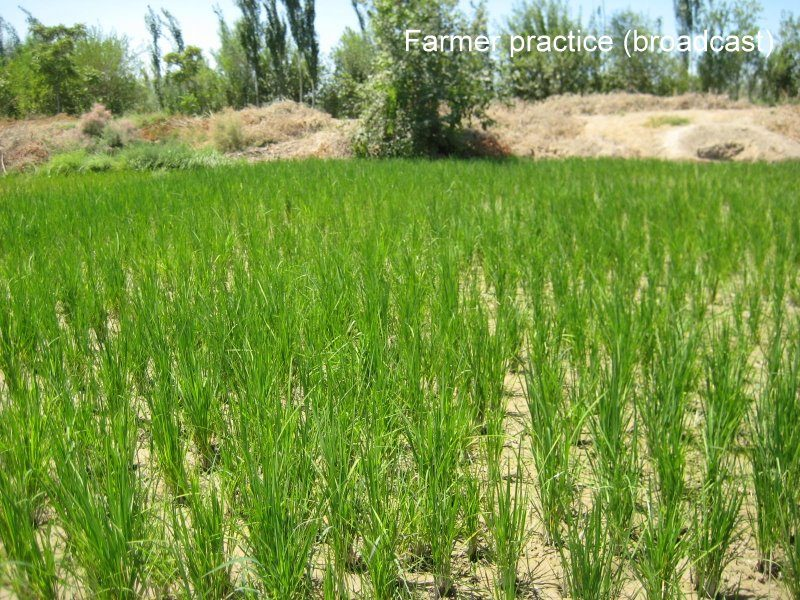
Balkh University
Under a subcontract to Purdue University in the Advancing Afghan Agriculture Alliance (A4) project, JDA helped build teaching capacity at Balkh University. JDA trained staff to teach laboratory courses in soil science and plant biology, and improved the faculty farm with an enclosure, a well, toilets, a farm manager's office, tool sheds and greenhouses.
JDA's technical notes, press releases, newsletters and its 2017 agriculture overview are on the Publications page.
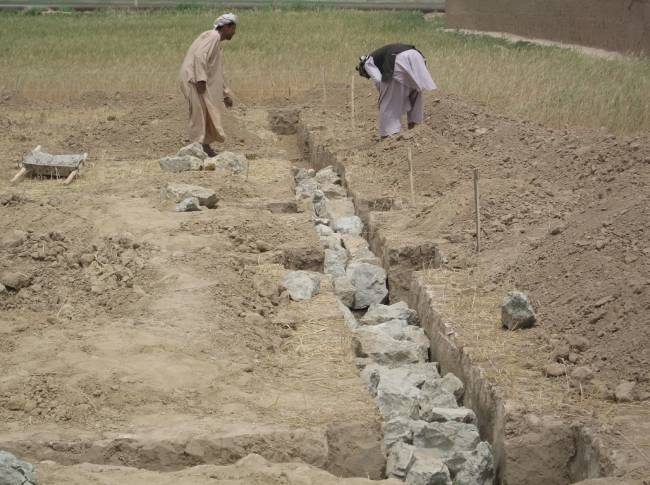
Two-wheel tractors: mechanizing Afghan farming
Two-wheel tractors were a key to the mechanization of farming in northern Afghanistan. A two-wheel tractor is a small diesel machine that the operator walks behind or rides on its trailer. With the right attachment it can plow and till, plant, reap, thresh, pump water and haul. In 2005, JDA pioneered the work of two-wheel tractors and implements imported from China, and for more than a decade it demonstrated them, trained farmers and mechanics to use and repair them, and helped owners turn them into small businesses.
The tractors were imported by OHT (Osiyo Hamkorlik Trading), JDA's sister company. OHT was set up to meet needs that JDA, as a nonprofit, could not, and to import new farm technology and train farmers to use it. Its company profile describes OHT, registered in 2006, as "the first private company that introduced Chinese two wheel tractor in Afghanistan." It began importing and selling the tractors, implements and spare parts in early 2007, and its staff had worked with the technology since the fall of 2006.

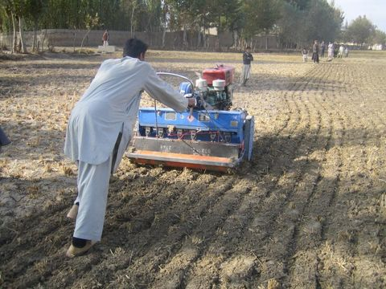

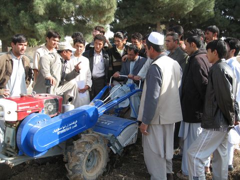

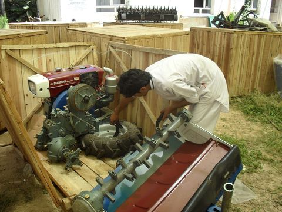

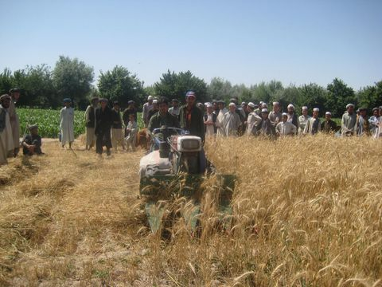

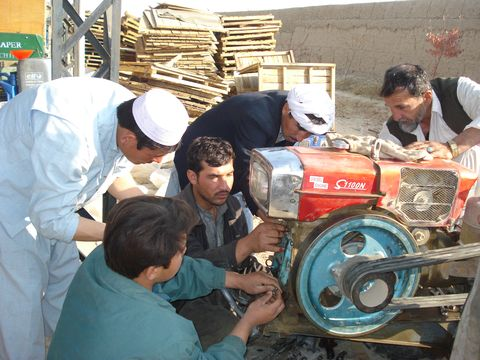

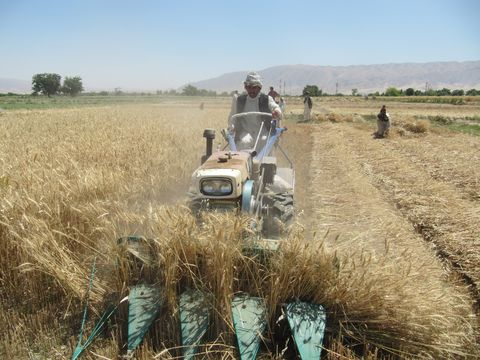
See all 56 two-wheel tractor photos in the gallery
Why it mattered
Most farms in the north are small, and OHT's statement of purpose describes the Chinese two-wheel tractor as suited to holdings of three hectares or less. OHT's brochure lists its advantages: it uses less fuel, fits small fields, is light enough not to compact the soil, does several jobs in one pass, and tills shallowly. For planting 1,000 square meters of wheat, the brochure compares about 1 hour and 300 afghanis with a two-wheel tractor, 6 hours and 600 afghanis with oxen, and 2 hours and 1,200 afghanis with a four-wheel tractor.
JDA's research under RALF, the wheat-based cropping systems project, found that the Chinese two-wheel tractor planted wheat faster and more cheaply than traditional methods, so farmers could plant earlier: in Kunduz, a week earlier than a neighbor. Rice seeded directly into wheat stubble yielded about 3 tons per hectare, and in Jawzjan a farmer's strip-tilled dryland wheat did better than his neighbors' in a dry year.
Winning farmers over took time. The RALF report notes that sales were slow at first: the one-year repayment terms offered on credit were hard for farmers to meet, and many believed that only a large 80-horsepower Russian four-wheel tractor would do. JDA answered with demonstrations and field days in farmers' own fields. By 2011, JDA's overview reported "a steady increase of use and change in attitudes for mechanization," with farmers renting themselves and their tractors out to neighbors as small businesses.
The machines
OHT's 2010 catalog lists the DF-15KL power tiller, with a 15-horsepower diesel engine and an 800-millimeter rotary tiller; the 4GL-120 reaper; the 2BG-6A cultivating seed drill and the 2BF-6A fertilizer and seed drill; and the DF-7C1.5 trailer, which carries 1.5 tons. OHT also imported threshers and small combine harvesters. Its statement of purpose adds water pumps and attachments for puddling rice paddies. OHT's shipment record lists 110 seed drills, 259 reapers and harvesters, and 123 trailers along with the tractors.
Kaldar: one tractor, then 93
In 2007, as part of USAID's AWATT project, a senior JDA mechanization specialist took a two-wheel tractor to Kaldar district and planted wheat directly into rice stubble so that farmers could compare it with local methods. To win over skeptical farmers, he suggested that the landowner try the tractor himself for a season. Three months later the landowner had worked more than 300 hours with it in his village and wanted to buy his own.
Within 18 months, 14 more Kaldar farmers had bought two-wheel tractors without any subsidy, and by the time JDA wrote up the story there were at least 93 in the district. A farmer with a tractor could hire himself and his tractor out for 350 afghanis, about $7, an hour and be busy a full day during planting and harvest. A local entrepreneur began building trailers, plows and powered carts, and sold 30 carts at more than $1,000 profit each. In Qarkin and Khamab, 110 two-wheel tractors were in use, along with new repair and manufacturing businesses.
In April 2008, JDA staff demonstrated a Chinese two-wheel tractor in a field in Kholm for a farmers' cooperative, and 24 of its members came to watch and try plowing a row themselves. JDA's press release, Kholm tractor days (PDF), noted that lenders had begun to offer loan products with payment options for farmers, who needed machines to raise production and cut labor.
Training, repair and spare parts
A tractor is only useful if it can be kept running. OHT's staff assembled the imported tractors, trained operators and mechanics, and built a network of 35 repair and spare parts shops across the north. OHT's company profile names Balkh, Jawzjan, Sar-e Pul, Faryab, Samangan, Baghlan and Takhar, and its map of the shops shows locations from Faryab to Badakhshan. Training took place in farmers' fields and at the Development Center, 2 hectares in Balkh bought by OHT, JDA's sister company, where JDA also held its own training, agricultural research and demonstrations. OHT's company profile lists, among other work:
- 2010: operation and maintenance training for 16 staff of the Ministry of Agriculture, Irrigation and Livestock in Kapisa;
- 2010 and 2011: 97 tractor packages for USAID's IDEA-NEW program, with ACDI/VOCA, including distribution, training and a year of supervision in five northern provinces;
- September 2010 to August 2012: repair and spare parts shops set up and 25 mechanics trained for IDEA-NEW, as OHT's in-kind contribution;
- 2010: training for 110 technical field staff of IRD, from 18 provinces, at the Development Center;
- 2011: 249 trainers from 18 provinces trained, and 250 spare parts packages supplied, for IRD's AVIPA Plus program, and 38 trainers trained for IDEA-NEW's Jalalabad office;
- 2012: 20 tractors, and training for 30 people, in Kandahar and Helmand for IRD.
At the end of 2010, JDA's 2011 overview reports, USAID "embraced this program" and funded another international NGO to distribute more than 4,000 two-wheel tractors with implements to 18 provinces.
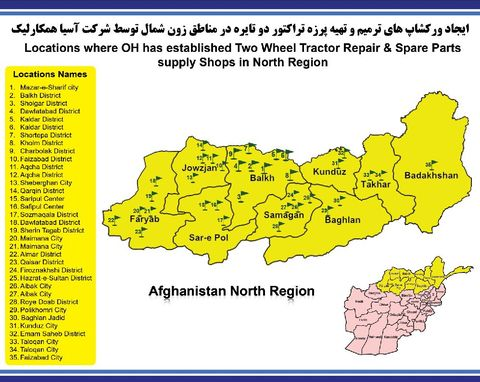
Contract harvesting and laser leveling
Under RADP-North, JDA trained 1,648 lead farmers in conservation agriculture, laser land leveling, sowing and reaping with two-wheel tractors, seed and fertilizer rates, and weed control. JDA also helped farmers turn idle machines into small businesses. In the 2015 harvest, 30 idle reapers were repaired and their operators trained in operation, maintenance, safety and business skills. By the end of the season they had worked for 165 clients and harvested 1,486 jeribs, about 297 hectares, in Jawzjan, Balkh, Samangan and Baghlan. In 2016, JDA worked with 185 contractors who reaped 8,105 jeribs for 899 clients. Under the same approach, the first 13 owners of laser land leveling units completed 184 private contracts and leveled 294 hectares between October 2016 and April 2017.
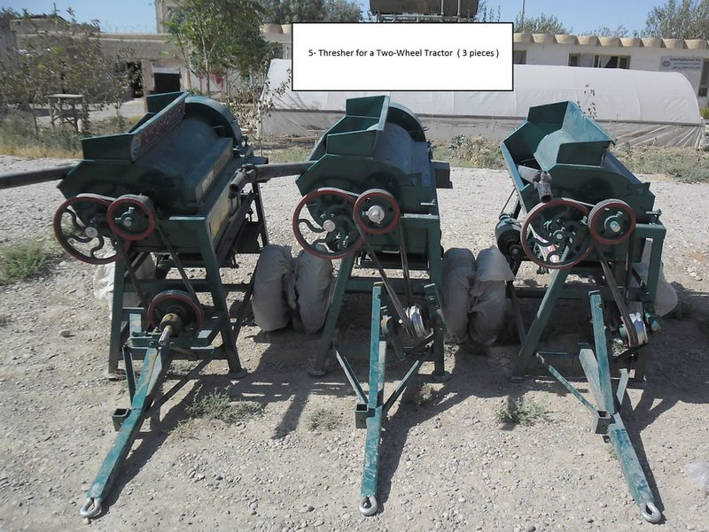
Two-wheel tractor timeline
- 2005: JDA begins testing Chinese two-wheel tractors with farmers under RALF, including planting wheat into rice residue in Kunduz.
- 2006: OHT is registered as a private company; its staff begin working with the tractors that fall.
- Early 2007: OHT begins importing and selling tractors, implements and spare parts; its first shipment holds 12 tractors.
- April 2007: At AgFair 2007 in Kabul, JDA's June 2007 newsletter reports, "We sold every piece of equipment we brought."
- 2007: The Kaldar demonstration under USAID's AWATT project starts a wave of private purchases.
- April 2008: Tractor days for a farmers' cooperative in Kholm.
- By August 2010: 298 tractors sold, 36 to farmers and 262 to organizations.
- 2010: OHT's largest shipments arrive, and through 2011 OHT trains operators, mechanics and trainers for IDEA-NEW and AVIPA Plus.
- End of 2010: A USAID-funded program distributes more than 4,000 two-wheel tractors to 18 provinces.
- 2012: OHT supplies 20 tractors and trains 30 people in Kandahar and Helmand for IRD.
- 2014 to 2019: Under RADP-North, lead farmers learn sowing and reaping with two-wheel tractors, and reaper owners start contract harvesting businesses in 2015 and 2016.
Two-wheel tractors in figures
- 494 two-wheel tractors imported by OHT, JDA's sister company (confirmed by Bob Hedlund);
- 298 tractors sold by August 2010 (confirmed by Bob Hedlund; OHT sales record);
- 35 repair and spare parts shops in the north (confirmed by Bob Hedlund; OHT workshop map);
- 18 provinces where the tractors were tested with farmers on their own land (OHT company profile);
- 249 trainers and 110 technical staff, from 18 provinces, trained for IRD (OHT company profile);
- 93 or more tractors in Kaldar district bought without subsidy after the 2007 demonstration (JDA two-wheel tractor story);
- 1,648 lead farmers trained under RADP-North, including in sowing and reaping with two-wheel tractors (JDA RADP-North page);
- 8,105 jeribs reaped by 185 contract harvesters for 899 clients in 2016 (JDA RADP-North reports).
RADP-North
From 2014 to May 2019, JDA was an implementer in USAID's Regional Agricultural Development Program-North (RADP-North), working on the wheat value chain in Baghlan, Balkh, Jawzjan and Samangan provinces. JDA signed its subcontract on August 14, 2014, and work began on September 1, 2014. Its activities included weed control training, side-by-side trials of wheat varieties with farmers, seven-kilogram seed sample packs that linked farmers to seed companies, hermetic PICS bags and lessons on safe grain storage for women, a hygiene and nutrition course for women, and contract harvesting. In weed control, JDA's 2017 overview reports that 3,300 trainees in the 2015 to 2016 season raised their wheat yields by an average of 33 percent. In nutrition, JDA's October 2016 newsletter reports 5,909 women taught in Samangan, Baghlan, Balkh and Jawzjan in about ten months. JDA's RADP-North page reports:
- 1,648 lead farmers trained in conservation agriculture, laser land leveling, sowing and reaping with two-wheel tractors, seed and fertilizer rates, and weed control;
- 35 laser land leveling units handed over to farmers, and 309 leveling field days for 8,823 farmers;
- 78,151 farmers trained in integrated weed management;
- 7,724 women trained in kitchen gardening.
JDA's 2019 annual report says that over the five years JDA worked with more than 85,000 farmers.
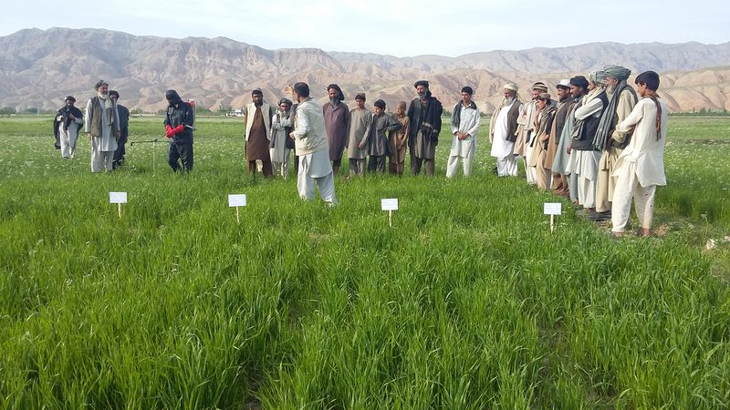
Water, sanitation, hygiene and nutrition
From 2009, JDA's WASH program combined new wells with hand pumps, biosand filters and, later, Sawyer filters, with home-based hygiene and nutrition training. The trainers were Afghan women educators, themselves from villages, who led sessions in people's homes. In schools, JDA added drinking water and hand-washing stations, and used puppet shows to teach young children about hand washing, safe water and preventing diarrhea.
The program started in Balkh province and worked in Balkh, Dehdadi, Nahr-e-Shahi, Kholm and Sholgara districts and in Mazar-i-Sharif. Its core was a series of 10 lessons over five weeks, with the aim of reaching 80 percent of the women in each village. Before drilling, village elders helped find and agree on the best location for a well, and village men learned basic hand pump repair and received a tool kit. Well and pump training was also done at the Development Center. JDA's beneficiary summary counts 250 men trained in hand pump repair.
JDA's well reports from 2013 to 2019 give average depths of 48 to 74 meters in different years, with individual wells from 28 to 90 meters. In 2018, JDA drilled with both a large rotary rig and a cable tool rig. Some wells went to schools: in 2017, wells at Sajadia High School and Elmarab High School, with 6,490 students between them, and in 2019, five school wells serving about 6,885 students, including a 62-meter well at Chelgazi school for 1,301 students.
What the WASH program counted
JDA's WASH and nutrition beneficiary report counts:
- 30,218 women trained, 18,068 in hygiene and 12,150 in nutrition, and 4,133 men trained in hygiene;
- 15 schools and 7,020 students in WASH in Schools;
- 45 villages declared free of open defecation, 41 with private latrines and 4 with public latrines;
- 282 biosand filters, used through 2015, after which JDA replaced them with Sawyer PointOne filters.
JDA's December 2017 newsletter compared surveys before and after training in Balkh, Dehdadi and Nahr-e-Shahi districts. The share of children under five with diarrhea fell from 39 percent to 3 percent, and the share of households with access to a safe source of water rose from 15 percent to 78 percent.
Filters for floods and drought
The Sawyer filters were distributed through OHT, JDA's sister company. JDA's record of Sawyer PointOne filter distributions lists 2,583 filters reaching about 15,753 people from 2013 to 2019. They included flood relief filters for 174 families, about 1,077 people, in Baghlan in 2014 and 100 more in Sar-e Pul; 183 filters for Karnai Sai village in 2016, where a well could not reach groundwater; and 1,550 filters for drought relief in Charkint district in 2018 and 2019. The 2019 Charkint distribution, delayed by snow, floods and landslides, took place in June and July 2019 in 15 villages and included a short hygiene lesson.
In all, JDA's wells in Afghanistan serve about 68,000 people: 74 wells with hand pumps. JDA trained 30,000 women in sanitation and hygiene. Counting clean water, hygiene, sanitation and nutrition training together, the WASH program as a whole reached 152,000 people.
BLiSS
BLiSS, short for Birth Life Saving Skills, began in 2013. Its home-based courses taught women basic life-saving skills for pregnancy, birth and newborn care. More than 1,300 women had taken part by May 2018.
The end of program work, 2019
RADP-North ended in May 2019. Because of the deteriorating security situation and budget cuts by partner organizations, JDA ended all of its program activities in Afghanistan that year. JDA's 2019 annual report called it "a difficult decision" after more than 18 years of work with Afghan communities.
Evacuation and resettlement, 2021 onward
In August 2021, as the Taliban took one province after another, JDA and its friends at Help the Persecuted began working to evacuate former JDA staff and at-risk Afghans. Rules changed constantly and few countries would accept evacuation flights. After weeks of attempts, the evacuation succeeded in October 2021, and JDA then helped the families with their onward journey and resettlement. In all, about 600 Afghan associates and family members were evacuated.
JDA set up the Grand Valley Resettlement Program (GVRP) to resettle families in Grand Junction and other parts of Colorado. Volunteers and sponsor groups helped families find housing and furnishings, enroll in health coverage and English classes, start school and find work. In December 2022, GVRP through JDA was approved by the U.S. Bureau of Population, Refugees, and Migration as a community partner under Lutheran Immigration and Refugee Service.
JDA and GVRP then announced ARISE (Afghan Resettlement, Integration, Stabilization, and Empowerment), a program in Grand Junction offering resettlement services, English classes, job coaching and vocational training, and help with credentials and education.
Sources. Evacuation total (about 600 people) confirmed by Bob Hedlund. JDA's GVRP page (archived August 2025) reports that in 2022 GVRP resettled 38 Afghan evacuees. JDA's home page in 2024 described ARISE as "set to begin in December 2023".
To protect the families, this site does not include names, photos or travel details of evacuees.
Sources for this page
- JDA website: projects page and "What's New" (2003), Sultan Ibrahim School dedication (2004), home page (2007), community health, WASH in Schools, BLiSS and RADP-North pages, GVRP page (2025), home page (2024), as archived by the Internet Archive.
- JDA two-wheel tractor story (Kaldar, undated), JDA overviews (2011 and 2012), JDA newsletter (June 2007), RALF final report, strawberry technical notes (2011), annual report 2019.
- JDA project files: company profile, list of selected agriculture projects, final report on 2008 melon fly training, RADP-North FY2014 annual report, well drilling reports (2013 to 2019), WASH locations since 2009, WASH and nutrition beneficiary summary, Sawyer PointOne distribution record, and the 2019 Charkint emergency report.
- OHT (Osiyo Hamkorlik Trading), JDA's sister company: company profile, statement of purpose, 2010 equipment catalog and brochure, tractor shipment and sales records (to August 2010), repair shop map, and photos from OHT's files. OHT's role in importing the tractors and distributing the Sawyer filters, the tractor figures (494 imported, 298 sold, 35 repair and spare parts shops) and the Development Center (2 hectares in Balkh, bought by OHT and used by JDA for training, research, demonstrations and well and pump training): confirmed by Bob Hedlund. Purchaser names, prices and contact details in these files are not used.
- JDA publications: press releases (2008), "Agricultural Development in Northern Afghanistan" (2017), and newsletters from August 2016, October 2016 and December 2017. See the Publications page.
- The Daily Sentinel, Grand Junction: May 4, 2022 and August 2022 (see Press).
- Well total (74 wells, about 68,000 people), evacuation total (about 600 people) and women trained in sanitation and hygiene (30,000) and WASH program reach (152,000 people; also in JDA's 2019 annual report): confirmed by Bob Hedlund.